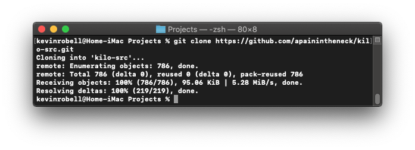
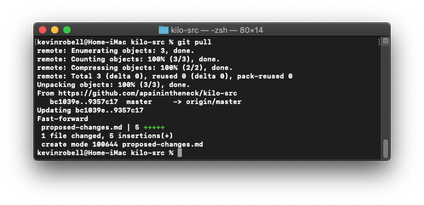
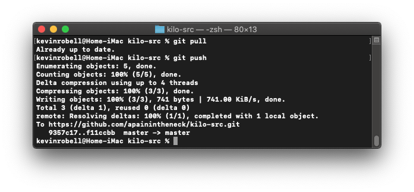

Git becomes much more valuable when multiple people can collaborate on the same project. This is accomplished by hosting the repo on a remote server. Users occasionally download new changes from the remote repo and upload new changes to the remote repo. Using git with a remote server or website differs slightly depending upon the installation. There are websites like github, gitlab, and gitbucket which will manage your remote repos for you; git can also be installed directly on private servers. Consult those sites for more information. For this section of the tutorial, I will show you the general commands which will be the same across all platforms. Sadly, you won’t be able to follow along like before.
We often don’t start new projects from scratch. Instead, we are contributing to mature codebases. Git allows us to make a local copy of a codebase by typing git clone <repo url>.

Once we have a local clone of the repo, it will function like the repo we created at the beginning of the tutorial. The only difference is that other users can make changes to the remote repo too. To download the newest changes from the remote repo type git pull. This is a combination of the commands git fetch(which grabs the newest changes from the remote repo) and git merge(which tries to merge those changes into your current branch. It may result in a merge conflict which you will have to solve by looking at the diff.

You can make changes to the local repo as shown earlier in this tutorial. Add your changed files and make a commit. To add these changes to the remote repo type git push. It may also result in merge conflicts that you will have to resolve.

Ending Tips
You’ve made it to the end of the tutorial. You now know enough about git to be dangerous. Here are two basic tips for how git should be used.
Never make changes directly on the master branch(origin). Always make a new branch and then merge those changes in when they are ready.
Before pushing your commits always pull from the server/website.
Be sure to review this tutorial if you’re unsure about anything or seek out other resources. I’ve included some of my favorite resources below that I consulted while building this website.
Additional Resources
git - the simple guide : This resource shows a detailed list of git commands and their functions.
Github - Git Guide: This resources shows detailed explanations of how git commands work and when to use them.
Pro Git: This book details how to the git program works, how to use it, and how to install git on your own server. Very detailed!